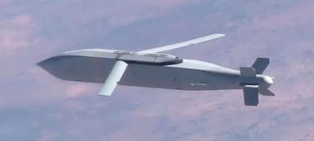
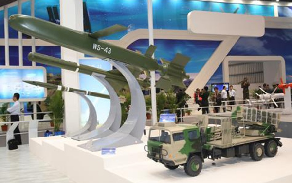

2015-11-01 00:45:00
我的手术与自己原先的预期有些差别；医生衹做了小规模的切除和Biopsy，所以手术前后身体不适总共只花了一天多的时间。医生的意思是如果我非要做全部的切除，可以下个月再来，不过现在我正在考虑是否如他的建议再等几年。总之我的写稿应该不会再受影响。
言归正传，另一个我认为可能在未来十年内装备共军的新武器是超远程火箭弹。一般的火箭弹如共军装备的PHL-03（P炮-H火-L轮，这型12联装300mm口径的卡车载火箭炮是俄制龙卷风火箭炮的仿制版）或美军M270系统所用的227mm口径MLRS原本设计射程都在70公里左右，这已超过155mm火炮发射无制导弹药的40-50公里射程，大约相当于军（共军和苏军）或师（美军）级的侦察极限和攻击纵深。PHL-03因为口径和重量（800+kg，相对于MLRS的300kg）较大，后来中共换装了等同美军的高性能火箭引擎后，射程达到了150公里，这要从福建沿海攻击澎湖是绰绰有余，但是若要打击臺湾本岛的目标就不够了。
其实纸面上最适合臺海战役先期火力准备的地对地投射武器，反而是国军在2010年从美国买了226枚的ATacMS Block IVA袖珍弹道导弹，弹重1.67吨，射程300+公里（很多导弹的公开射程指标都在280-300公里之间，这并不是因为这样的射程特别有用，而是受国际条约Missile Technology Control Regime的限制，外销型射程必须小于300公里，而内销型的性能往往是保密的；例如共军的YJ-62最大射程其实是600+公里，但是外销型衹号称280公里；ATacMS Block IVA的外销型射程号称略小于300公里，实际上应该在350公里左右），在最大射程时的弹头重230kg，所以有效载荷比是230/1670=14%。这个载荷量是小了点，但是国军是守势作战，打击的目标不是坚固的堡垒，而是准备登船渡海的野战部队，没有什么工事防护，所以毁灭力可以用子母弹头来增强。
共军用来打击国军坚固阵地的地对地投射武器有二炮自行招标开发的DF-15和原本由航天工业部搞来外销的DF-11两型。后者较小也便宜些（不过其TEL十分豪华、太过昂贵，也是共军20年多前选择以DF-15为主力的原因之一），适合与火箭炮以及ATacMS来做比较。DF-11A重3.8吨，射程至少有500+公里，弹头重800公斤，有效载荷比是800/3800=21%。国军购买ATacMS的单价超过400万美元一发，DF-11A在近年的价格却仍然衹有130万美元，共军似乎是占了大便宜了。但是DF-11A的精度不高，据称误差达到200米（惯性制导；若加上卫星制导，误差应可压到50米以下，仍然不足以打击点目标），衹能攻击机场之类的大型目标，这也是为什么共军还保留了几百枚远较昂贵的DF-15，准备依靠它较佳的精度来对点目标（如国防部）做手术式的精确打击。
DF-11的精度虽然比不上ATacMS和DF-15，但是相对于衹有简易制导的火箭弹还是好得多了；它的白菜价更是严重压缩了超远程火箭弹在共军序列里能存活的空间。例如增程后的PHL-03，单价达到12万美元，弹重840kg，弹头重230kg，在150公里射程的误差就与DF-11相当。如果要开发能替代DF-11的火箭弹，它的射程必须至少加倍，精度也就必须加倍（精度=射程/误差），载荷则必须增加三倍多，而价钱却不能成长超过十倍，这是非常困难的。中共的航天科技集团七院在20多年前就开发出卫士（WS）系列，2004年展出的WS-2D射程达到了400公里，但是精度比PHL-03还低，载荷也仍然衹有220kg；如果要改进精度到DF-11的水平，就必须改装同样的高精度惯性制导部件，这就是WS-3系列。可是弹道飞弹/火箭弹的惯性制导部件占总价格的1/2以上，那么弹重1.2吨，载荷却衹有DF-11的30%不到的WS-3型，无论如何也不可能在性价比上与前者竞争。2004年同在珠海航展出现的还有B611型袖珍弹道飞弹，弹重两吨，射程150公里时载荷也衹有480公斤，所以也和卫士系列一样衹能尝试做外销（后来成功卖给土耳其）。
所以我预期在未来十年可能出现而且取代DF-11的超远程火箭弹，并不是传统式的设计，而是一个全新的概念：也就是火箭助推滑翔弹。简单地说，就是把美军的联合战区外武器（Joint Standoff Weapon，JSOW）稍加放大后加上一个火箭助推器，从而把一个空射的武器改为陆射的（国军的雄风三型正是经过了这样的改装，参见《台湾没有航母杀手......也没有需要》）。这里的妙处就在于滑翔弹的速度较慢，衹用很便宜的GPS（共军显然必须改用北斗）+低阶惯性导航就可以达到极高的精度。美军自用的JSOW单价衹有28万美元，共军没有花费超过20万美元的道理，再加一个10万美元左右的助推器，总价在30万美元左右，载荷却已达400kg以上，射程也轻易达标。如果需要更大的弹头，滑翔的物理效率远高于自由弹道，即使载荷加倍，价格的增加也很有限（主要集中在更大的助推器上），应该衹需40万美元左右，那么就能以三倍的性价比来对DF-11做替换。
滑翔中的JSOW，中共的军工业已经展示过自家的大号版本。改装为陆射后，其所需的发射筒尺寸与WS-2系列相同。
不过我对这个新装备出现的机率没有太大的信心。这倒不是因为上面的分析有什么问题，而是因为其作战任务刚好介于陆军的战术级别和二炮的战略级别之间，算是一个战役级的武器。DF-11归二炮管，火箭炮却是中共陆军的装备；要用陆军的新武器来直接取代或补充另一个军种的配备，在任何一个国家的军事官僚体系下都是很困难的。DF-11A在1999年才定型，还剩有很长的寿命，替代它并没有急迫的需要，所以这项换装并不是水到渠成的事。
一年前在珠海航展惊鸿一瞥的WS-43火箭助推滑翔弹，前方是其发射车的模型，与WS-2和WS-3通用。这个助推器太小，看来射程顶多衹有150公里左右，所以不能用来替换DF-11。我年纪大了，记性也跟着差了；虽在去年看过这张照片，昨天写稿的时候却完全不记得，或许这个火箭助推滑翔弹的构想就是WS-43在我潜意识中留下的。我其实很高兴发现中共已经有了这方面的研究，因为原本写这篇文章时，还怕被骂“资敌”（当然那是太高估这个部落格的影响力，也太低估中国军工业的想象力了）。